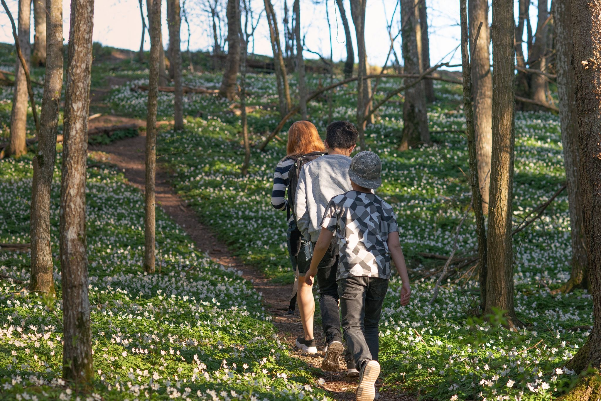
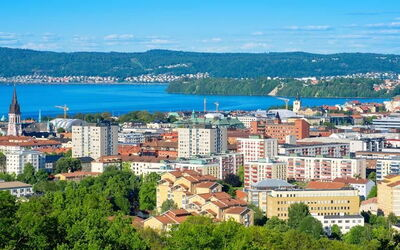
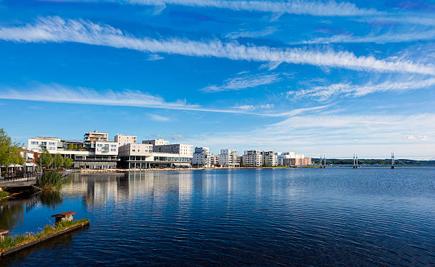

Jonkoping can be a small city for several people, but there are a lot of things that you can do.
What can you do here?
You can do plenty of things but here are some of my favourites:
In this city there are a lot of sights where you should see so hiking is a must. Nature is everywhere, trees and greenery and of course the beautiful lakes that surround the city.
 What are good places to go out?
If you are visiting Jonkoping, you should definitely walk around Radhusparken and go shopping at Asecs and Ikea for the best products.
In Jonkoping, you can go visit the lakes, go for a nice coffee in the city center as well as mini-golfing.
What are good places to eat?
If you are hungry, pass by Bastard burgers where you will have the best burgers in town accompanied by a great view located in the center near the lake.
For a more afforadable option, if you are craving chinese, "Mr.Guys" is the way to go, with options like chicken and rice or sushi if you prefer.
It also found near the lake, in the city center.
